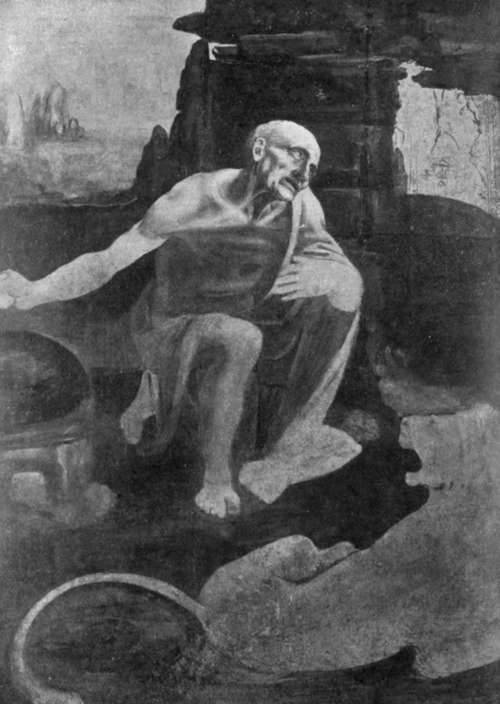

Chapter II. The Sculpture
Description
This section is from the book "Leonardo Da Vinci", by Edward McCurdy. Also available from Amazon: Leonardo Da Vinci.
Chapter II. The Sculpture
THE note of his recommencing the horse in April, 1490, is the earliest dated reference in Leonardo's own MSS. to his work upon the equestrian statue of Francesco Sforza, by which the political sagacity of Ludovic purposed to commemorate the founder of his dynasty.
It was by his work on this statue that the artist's genius made the deepest impress upon the imagination of his contemporaries. The inception of the project dated back to 1472, when Galeazzo Maria Sforza gave the commission to Cristoforo and Antonio Mantegazza, the sculptors who decorated the Certosa with bas-reliefs. They hesitated to undertake a work of such magnitude, and apparently never made a beginning.
Ludovic took up the project very soon after he seized the reins of power in 1479, and presumably caused it to be known in Florence; for, according to Vasari, Antonio Pollaiuolo-who is not known ever to have been at Milan -made for Ludovic a design and model for an equestrian statue of the Duke Francesco. Two such drawings Vasari possessed. In one the duke was represented with the city of Verona beneath. In the other, now at Munich, he is in full armour, making his horse leap on to a fallen soldier.1 The similarity of conception between this drawing and such of Leonardo's studies as represent the horse galloping suggests that the form of the statue was prescribed by Ludovic. The theory of a competition in which the two artists took part requires corroboration and is not altogether borne out by such evidence as we possess. I believe that Pollaiuolo's drawings for the statue preceded any of those by Leonardo.
The verses of Baldassare Taccone on the erection of Leonardo's model in 1493 say that Ludovic had long wished to erect the statue, his difficulty had been to find a Leonardo:
E se piu presto non s' e principiato, la voglia del Signor fu sempre pronta; non era un Lionardo ancor trovato.
How widely his intention was known is shown by the fact that in 1482 Francesco d'Arrigoni sent from Naples certain Latin epigrams for the base of the statue. Neither these nor the accompanying letter to Ludovic contain any phrase which would show either that the poet knew to whom the commission had been given or that the statue was actually commenced.
The date at which the commission was given to Leonardo is to be deduced primarily from the statement of Fra Sabba da Castiglione that he laboured on it for sixteen years. As he left Milan before the close of 1499, he must therefore have commenced as early as 1483.
In the dedication to Ludovic of De Divina Proportione Fra Luca Pacioli, mentioning Leonardo as one of those present at a " laudabile e scientifico duello " (whatever that 1 Reproduced in Courajod, " L. de V. et la statue de F. Sforza." may have been!) held on the 9th of February, 1498, gives the exact dimensions and weight of the statue. It was then presumably ready for the casting. We cannot, however, assume that Fra Sabba's period of sixteen years was then ended, and therefore had commenced by February, 1482. Leonardo's own MSS. afford a firmer basis. In the letter to Ludovic asking to be taken into his service he offered to execute the statue. The draft of a letter to the Commissioners of Buildings at Piacenza, advising them against hastily bestowing the commission for the bronze doors of the Cathedral, concludes: " Believe me, there is no one who is capable except Leonardo the Florentine, who is making the bronze horse of the Duke Francesco, and you need take no count of him, for he has work that will last his whole lifetime, and I fear that it is so great an undertaking that he will never finish it."1 On the other side of the page is another fragment of the letter: "there is one whom the Lord has summoned here out of Florence to undertake this work of his, and he is a capable master, but is so full of commissions ..."2 His departure to Milan was therefore directly concerned with the commission for the statue. It took place in 1482 or 1483. Records touch it again next in the letter written to Lorenzo de' Medici in July, 1489, by Piero Alamanni the Florentine agent at Milan, asking him in Ludovic's name to send him one or two masters who are skilled in such work to construct the statue, "for although he has en-' trusted this commission to Leonardo da Vinci he does not seem to me to have any great confidence in his "capacity to carry it to completion."
The prospect of being superseded seems to have roused Leonardo to fresh activity. The poet Piattino Piatti, in a letter of August 31, 1489, says that he had applied to him and to others for an epigram for the base of the statue.
1 C. A., 323 r.
2 C. A., 323 V
Plate 6. St. Jerome
S. Jerome Anderson photo - Vatican Gallery, Rome
It does not follow that the model was then completed. The epigrams with which the history of the statue is bestrewn are almost as thick as Vallombrosa's autumnal leaves. Arrigoni's epigrams undoubtedly preceded its construction. Leonardo would seem to have been somewhat previous in giving the "Literati" a theme. In the following spring he commenced a fresh model. " On the 23rd of April, 1490, I commenced this book and recommenced the horse." This model, presumably, was that erected in 1493 in the court of the Castle of the Visconti on the occasion of the marriage of Bianca Maria Sforza with the Emperor Maximilian.
Baldassare Taccone1 has described the scene:
Vedi che in corte fa far di metallo,
Per memoria del Padre un gran colosso
I' credo fermamente e senza fallo
Che Gretia e Roma mai vide il piu grosso,
Guarda pur come e bello quel cavallo!
Leonardo Vinci a farlo sol s' e mosso.
Taccone is somewhat contradictory, and must be allowed a poet's licence. The first of these lines suggests that the statue was already cast in bronze, the last that it was in an unfinished condition.
Continue to:
Tags
leonardo da vinci, pictures, drawings, galleries, statues, da vinci